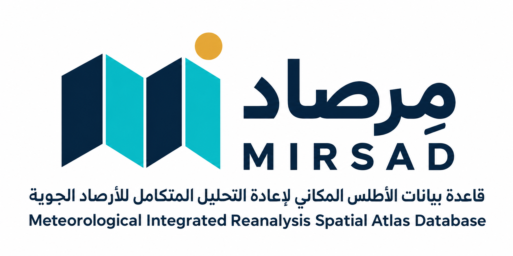

METEOROLOGICAL INTEGRATED REANALYSIS SPATIAL ATLAS DATABASE (MIRSAD)
صندوق أدوات ArcGIS لحساب 19 حزمة مناخية من السلاسل الزمنية، وإنتاج طبقات النقاط والراستر وجداول البيانات. اختر دولة ومحطة واحدة أو عدة محطات بالأسماء والأكواد، مع الحفاظ على القيم الناقصة عند غياب المدخلات المطلوبة.

أعلى دقة لليابسة
0.10° (~9 km)
جودة البيانات
NULL-aware
19
حزمة مناخية موديولية
5
مصادر بيانات معتمدة
2,250
تدرج لوني كارتوجرافي
28,066+
محطة رصد معتمدة (944 عربية)
37+
مؤشراً علمياً مسجلاً
100%
مفتوح المصدر (MIT)
صُممت المنظومة لتتجاوز التحديات التاريخية في أبحاث المناخ التطبيقي ونظم المعلومات الجغرافية؛ حيث تحول مسار العمل من أسابيع من التجميع اليدوي إلى نقرة زر واحدة.
تنزيل وتجميع السلاسل الزمنية اليومية والشهرية والفصلية والسنوية، حسب تغطية المصدر المختار، دون كتابة أكواد مخصصة لكل دراسة.
دعم كامل للبيئات المعزولة وشبكات العمل المغلقة؛ حيث يمكن تغذية المنظومة بملفات إكسل أو طبقات جاهزة لتوليد الأطلس والاستيفاء والترميز الكارتوجرافي فوراً.
حساب البخر والنتح بطريقة Hargreaves-Samani، ومؤشرات الجفاف De Martonne وUNEP، والإجهاد الحراري HI وWBGT، عند توفر مدخلات كل مؤشر.
توليد أسطح راستر حقيقية مقصوصة (Clipped GeoTIFF)، وخطوط تساوي الضغط (Isobars)، ومتجهات الرياح الدائرية عبر (atan2)، وقواعد بيانات جغرافية (GDB) وشيب فايل.
أكثر من 45 ملف ستايل (.style) تغطي 25 نظام تصنيف إحصائي (من فئتين وحتى 32 فئة)، لضمان تمثيل بصري قياسي يماثل كبرى الأطالس المناخية الدولية.
المطر المرصود صفرًا يظل صفرًا، والقيمة المفقودة تظل خالية. مجاميع المطر تحتاج فترات مكتملة، ومؤشرات الجفاف والاتجاهات لا تُنتج من قيم افتراضية أو أرقام ثابتة.
مصادر منفذة للنقاط والمحطات والشبكات، واختيار Auto لأدق منتج مناسب لكل متغير. راجع دليل المصادر الكامل للتغطية والاعتماديات وشروط الدخول.
دليل المصادر الكامل بالعربية والإنجليزية | Full bilingual source directory
MIRSAD Multi-Source Fusion Architecture
ينهي NOAA لكل المحطات أولًا، ثم ERA5 للقيم المفقودة، ثم NASA للمتبقي؛ يتبع ذلك Gap Fill الشهري الاختياري. هجين النقاط يبدأ من ERA5. القيم الصحيحة لا تستبدل.
لدمج رصد المحطات وإعادة التحليل بصورة موثقة؛ افحص التغطية والبيانات الخام والتقديرات.
National Oceanic & Atmospheric Administration (NOAA NCEI - USA)
تنزيل رصد يومي بمعرف المحطة وموقعها: GSOD يستخدم USAF/WBAN، وGHCN يحتاج GHCN_ID صريحًا. لا تُحوّل نقطة عادية إلى أقرب محطة ولا يُعلن عن ISD الساعي.
اختر الرصد الحقيقي عند وجود هوية محطة مطابقة؛ لا يضمن أرشيف المحطات كل العناصر أو الفترات.
NASA Langley Research Center & CERES Team (USA)
مصدر منفذ لتنزيل البيانات المناخية عند النقاط ومواقع المحطات، وكذلك الشبكة الإقليمية في أداة الراستر. تعتمد المؤشرات الناتجة على المتغيرات المتاحة للفترة المختارة.
اختره لبيانات NASA POWER النقطية أو الإقليمية، مع مراجعة المتغيرات والفترة اللازمة للمؤشرات المطلوبة.
ERA5-Land 0.1° / ERA5 0.25° — Auto per variable
Auto يختار Land أو ERA5 حسب المتغير والفترة كاملة، مع اختيار يدوي متقدم. الوضع المستقل بلا NASA، والهجين يحتفظ بترتيب مصادره.
لتحليل إعادة التحليل عند النقاط أو مواقع المحطات، حسب الفترة والمتغيرات المتاحة من المصدر.
ERA5-Land ARCO — Need Sign In
وصول مباشر إلى ERA5-Land عبر CDS برمز المستخدم وقبول شروط المنتج. التحويل من الساعي منزوع التراكم إلى يوم مكتمل؛ لم يُثبت التنزيل بحساب فعلي بعد.
أدخل رمز حسابك في خانة الدخول. المنتجات الإضافية وتغطيتها: CHIRPS وTerraClimate وCHELSA وMODIS LST وIMERG في دليل المصادر الكامل.
تغطي المنظومة 19 حزمة علمية مستقلة يمكن تفعيلها منفردة أو مجتمعة لإنتاج مئات الطبقات المناخية المشتقة.
تتضمن المنظومة أربع أدوات وركائز متكاملة تغطي محطات الرصد الأرضية، معالجة وتحليل النقاط، استيفاء الراستر الشريطي، وقواعد البيانات الجغرافية.
واجهتان عربية وإنجليزية لاختيار دولة ثم محطة واحدة أو عدة محطات بالأسماء وأكواد USAF/WBAN. تُعالج المحطات المختارة فقط، مع إمكانية إضافة نقاط مسح داعمة اختيارية.
الأداة النقطية الرئيسية (`.pyt`). تتولى استعلام المحطات والنقاط، سحب السلاسل الزمنية، تطبيق المعادلات وحساب المؤشرات، وإجراء الاستيفاء المكاني (IDW, Kriging, Spline)، وإنتاج خرائط متجهات الرياح والآيزوبار والتصدير لـ GDB و Shapefile و Excel.
صندوق مستقل للشبكات الإقليمية: NASA POWER وخلايا CHIRPS/CHELSA الأصلية، ثم التحليل والاستيفاء والقص. توجد أيضًا معالجة أوفلاين لحقول نقاط محسوبة مسبقًا.
مركز محطات الرصد الجوي المرجعية عالمياً وعربياً ومحلياً. قاعدة بيانات جغرافية (.gdb) وشيب فايل مع كود WMO والمناسيب، بالإضافة لخرائط HTML تفاعلية تتيح استكشاف المحطات والبحث الفوري في المتصفح.
جديد • اختيار المحطات
في أداة المحطات، اختر وضع «اختيار محطات محددة من الدولة (اختيار متعدد)». القائمة تعرض الأسماء وأكواد USAF/WBAN لتمييز المحطات المتشابهة.
تغيير الدولة يستبعد اختياراتها السابقة. الاختيار الفارغ يمنع التشغيل بدل معالجة شبكة الدولة كاملة.
دليل اختيار المحطاتفعّل Generate_Monthly_Rasters مع حقول الشهور الموجودة وفترة سنتين فأكثر. المتوسطات الشهرية ونطاقاتها لهما مفتاحان مستقلان.
الفترات الناقصة لا تُعرض كإجماليات مكتملة، والدمج المكاني لا يستخدم أرقام الصفوف لربط مواقع مختلفة.
تفاصيل إصلاحات البياناتلا تتطلب المنظومة أي عمليات تثبيت معقدة عبر سطر الأوامر؛ فقط أضف صندوق الأدوات مباشرة داخل بيئة ArcGIS المفضلة لديك.
قم بتحميل حزمة المستودع كملف ZIP وفك الضغط في أي مجلد عمل محلي، أو استنساخ المستودع عبر Git.
في برنامج ArcMap أو ArcGIS Pro، افتح نافذة ArcToolbox أو متصفح الكتالوج (Catalog Window).
انقر بزر الفأرة الأيمن واختر Add Toolbox، ثم حدد ملف `Toolboxes/MIRSAD_Climate_Atlas_Generator_10_8.pyt`.
افتح الأداة، وحدد طبقة النقاط والموديولات المطلوبة ومجلد الحفظ، ثم اضغط OK لبدء التوليد الآلي!
كافة الأدوات والقواميس والملفات التوثيقية مفتوحة ومتاحة للتحميل المباشر والاستخدام الأكاديمي والمهني.
دليل عربي وإنجليزي من 45 موضوعًا، بمعادلات العناصر الـ19 وربطها بأسماء الأعمدة، وفهرس وبحث ومفضلة. مصدر Desktop متاح للمساهمة؛ لا يوجد إصدار ثنائي مستقر منشور بعد.
أداة المحطات بواجهتين عربية وإنجليزية واختيار متعدد حسب الدولة. حمّل الحزمة كاملة لتضم المحرك ودليل المحطات والملفات المساعدة.
صندوق أطلس النقاط مع الملفات المساعدة؛ أداة الشبكة الإقليمية في صندوق راستر مستقل. حمّل الحزمة كاملة واحتفظ بهيكل المجلدات.
صندوق مستقل للشبكة والراستر المناخي من NASA POWER وCHIRPS وCHELSA، أو نقاط محسوبة مسبقًا. ملف الدخول Toolboxes/MIRSAD_Grid_Raster_Climate_Atlas_Generator.pyt.
قاعدة البيانات الجغرافية (.gdb) والشيب فايل والخرائط التفاعلية لـ 28,066 محطة عالمية و 944 محطة عربية.
قاموس الحقول والمؤشرات باللغتين العربية والإنجليزية مع الوحدات الفيزيائية.
دليل الـ 2,250 تدرج لوني وقواعد التصنيف الكارتوجرافي للطبقات.
الاستنساخ المباشر عبر سطر الأوامر:
git clone https://github.com/ahmadibrahim4geo/MIRSAD.git
المنظومة مبنية بمعمارية معيارية تتيح لأي باحث أو مبرمج إضافة مؤشرات أو حزم مناخية جديدة بسهولة وأمان.
تعتمد المنظومة على كتابة الدوال الرياضية والخوارزميات بلغة Pure Python القياسية أولاً، ثم ربطها مع ArcPy لتسهيل الاختبار خارج بيئة ArcGIS.
يتوفر في مجلد `Documents/06_Methodology_Adding_New_Climate_Module` دليل تطبيقي خطوة بخطوة لكيفية تسجيل موديول جديد وتوليد تدرجاته اللونية.
نرحب بكافة المساهمات العلمية والأكاديمية عبر فتح Pull Request أو الإبلاغ عن أي استفسار أو مشكلة عبر نافذة GitHub Issues.